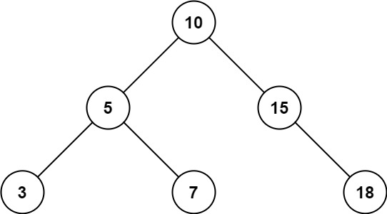
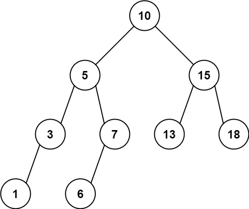

938. 二叉搜索树的范围和
在 BST 上做剪枝 DFS：值比 low 小就整棵剪掉左子树只走右，比 high 大只走左，界内就累加自己并两侧都走。
思路
- 不用遍历全树：BST 里
val < low时左子树全部< low，整棵剪掉，只递归右子树。 val > high对称处理：剪掉右子树，只递归左子树。- 界内结点：累加
val，左右子树都可能藏界内值，两侧都要走；空结点返回 0。
图解
最优解
1class Solution {2 public int rangeSumBST(TreeNode root, int low, int high) {3 if (root == null) return 0;4 // BST 性质：val < low 时整棵左子树都 < low，剪掉只走右5 if (root.val < low) return rangeSumBST(root.right, low, high);6 // 对称地：val > high 时整棵右子树都 > high，剪掉只走左7 if (root.val > high) return rangeSumBST(root.left, low, high);8 // 界内：累加自己；左右子树都可能藏界内值，两侧都要走9 return root.val + rangeSumBST(root.left, low, high) + rangeSumBST(root.right, low, high);10 }11}题目
给定二叉搜索树的根结点 root，返回值位于范围 [low, high] 之间的所有结点的值的和。
示例 1：

输入：root = [10,5,15,3,7,null,18], low = 7, high = 15 输出：32
示例 2：

输入：root = [10,5,15,3,7,13,18,1,null,6], low = 6, high = 10 输出：23
提示：
- 树中节点数目在范围
[1, 2 * 104]内 1 <= Node.val <= 1051 <= low <= high <= 105- 所有
Node.val互不相同
题面取自力扣当前版本。
数据快照 2026-11-04。题面版权归力扣所有，本站点仅供本人学习使用，请勿对外发布。